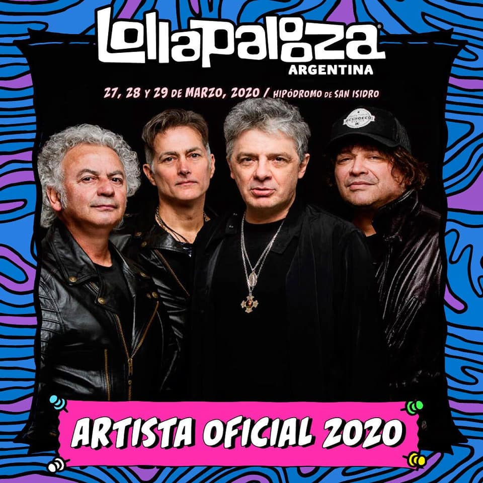
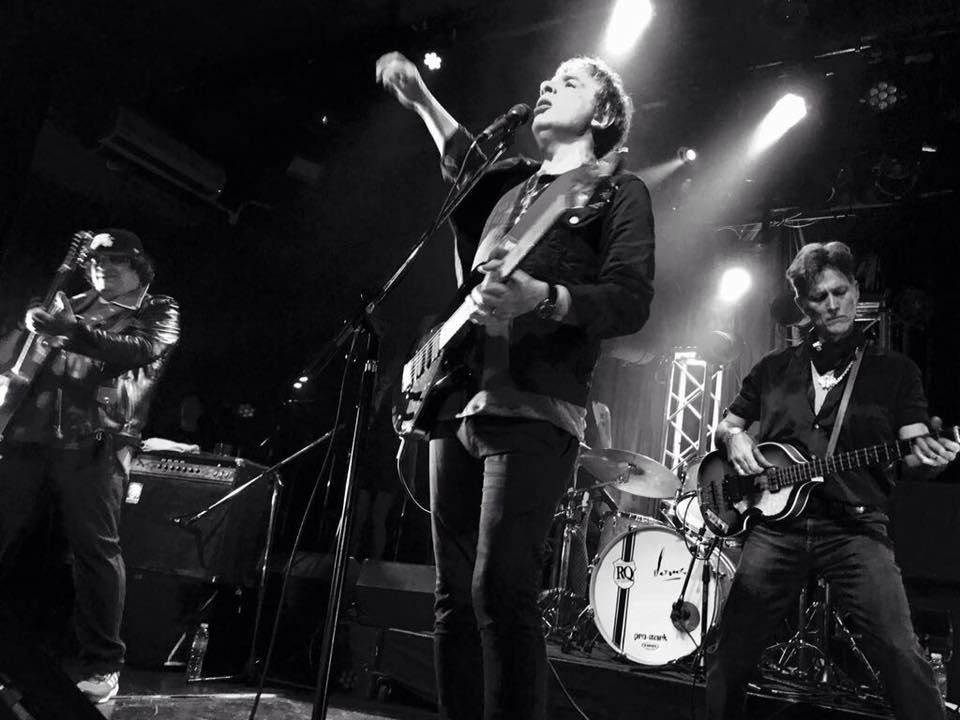
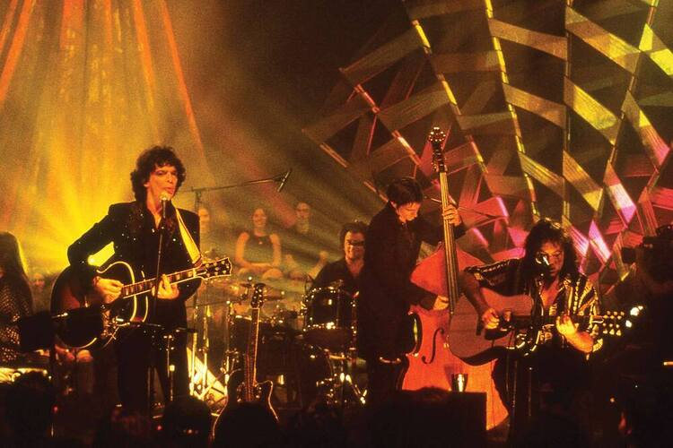
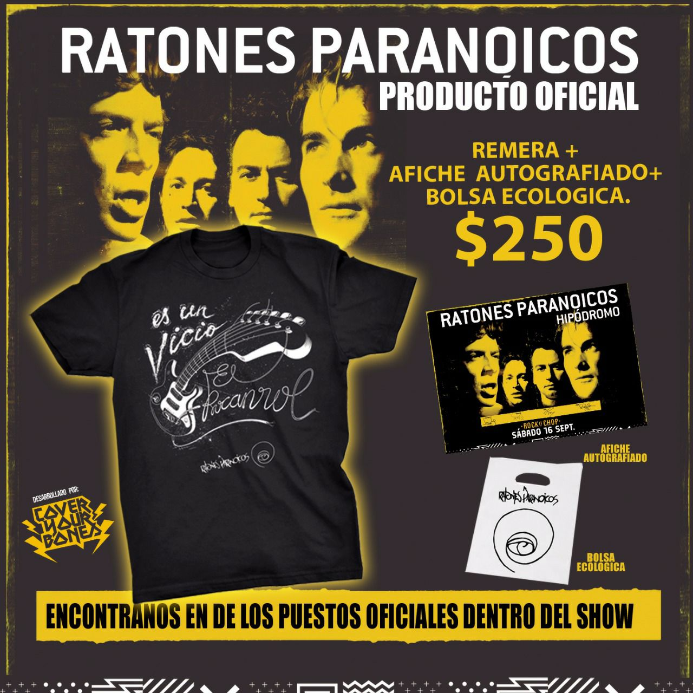

Noticias de la Banda
El Festival Lollapalooza 2020 volverá a llevarse a cabo en el Hipódromo de San Isidro, el mismo lugar que hospedó el evento en cada una de sus ediciones desde su llega a nuestro país en 2014. Esta vez será los días 27, 28 y 29 de marzo
En su séptima edición en estas tierras, el multitudinario evento creado por Perry Farrell será encabezado por Guns N Roses, la banda más importante del hard rock de todos los tiempos; Travis Scott, el rapero del momento que llega por primera vez a la Argentina; The Strokes, entre otros.
Por el lado nacional, los encargados de representar y seguir dando a conocer el talento local serán los Ratones Paranoicos, Él Mató a Un Policía Motorizado, Duki, Wos, Emmanuel Horvilleur, Fabiana Cantilo, Louta, Airbag, YSY A y La Delio Valdez, entre muchos artistas más.
Gira 2022-23
Los Ratones Paranoicos acaban de retornar de España y Estados Unidos y preparan su concierto en el Famoso Luna Park en la Capital de Buenos Aires, Argentina. Los Ratones Paranoicos llamaron "Los chicos quieren más..." a su último disco de estudio.
Juanse, Quintiero, Roy y Sarcófago la pasaron bien y luego de unos días de descanso, ya están ajustando de nuevo para arreglar el show que darán en el Luna Park, el 29 de Junio en la capital de Buenos Aires.
Es el primera vez, con casi veinte años de carrera, que visitan España. Si bien hicieron un toco y me voy en el 98, cuando estuvieron en el Mundial de Francia y tocaron en el Hard Rock de Barcelona no emprendieron un gira por el país. Ahora, con la edición española de "Vivo paranoico", el disco grabado en vivo en Museum en agosto de 2000, realizaron una efectiva gira, que incluyó recitales en Madrid, Pamplona, León, Salamanca, Bilbao y Barcelona.
Próximos lanzamientos
La grabación fue realizada en vivo en Miami, dentro del famoso ciclo de conciertos televisivos acústicos del canal. Este “MTV Unplugged” repasa grandes momentos de la carrera de Ratones Paranoicos. Es una auténtica colección de hits, como por ejemplo “Vicio”, “Rock del pedazo”, “Carol”, “Rock del gato”, “Sucia estrella” y “Ya morí”.
El show fue grabado el 19 de septiembre de 1997 en el Miami Broadcast Center y se editó seis meses después, en marzo de 1998 sólo en CD. La formación de Ratones Paranoicos fue la histórica: Juanse en voz y guitarra, Sarco en guitarra, Pablo Memi en bajo y Roy en batería.
Como invitado también estuvo el tecladista Germán Wiedemer, que tenía apenas 18 años de edad y luego tocó con Memphis la Blusera, David Lebón, Vicentico y Andrés Calamaro. La mezcla y producción estuvo a cargo de Joe Blaney, el mismo de los primeros discos solistas de Charly García.
Tienda Online
Proximamente abriremos nuestra Tienda Online donde podras encontrar remeras, buzos, posters y todo lo relacionado a la banda!